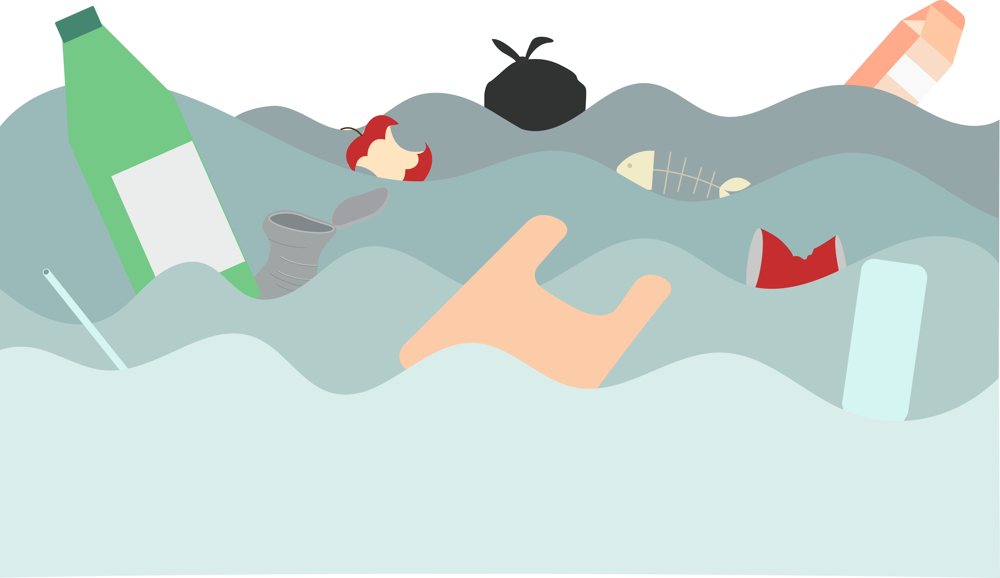
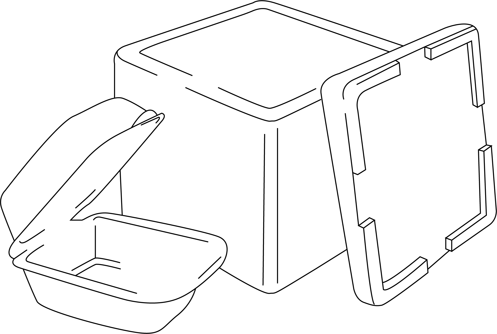

생활폐기물이란?
여러 폐기물 가운데 생활폐기물은 우리가 생활 속에서 사용한 후 종량제 봉투에 담아 버리고 있는 것들을 말합니다. 최근에는 편리함을 추구하며 만들어진 인스턴트 음식, 일회용품 등이 생활폐기물 양을 불리고 있습니다. 또한 비닐, 기저귀, 휴지, 종이, 플라스틱, 고무 등 모두 나열할 수 없을 정도로 많은 종류의 물질들이 생활폐기물이 되어 버려집니다.
생활폐기물이 환경에 주는 악영향
생활 폐기물은 재활용되는 경우도 많지만, 매립이나 소각, 해외 배출 등환경을 파괴하는 방법으로 처리하는 경우도 많습니다.
매립할 경우 수질오염과 토양오염 등 환경을 훼손하는 문제가 발생되는데,이는 동물과 식물의 서식지가 파괴된다는 말과 같습니다.
일회용품(생활 폐기물)썩는 기간
종이류
2~5개월
비닐 팩
10~20년

플라스틱 제품
50~80년

스티로폼
500년 이상

알루미늄 캔
500년 이상
유리제품
4000년 이상
생활 폐기물, 사용을 100% 금할 순 없겠지만 문제를 인식하고 생활한다면 충분히 환경을 보호할 수 있습니다.